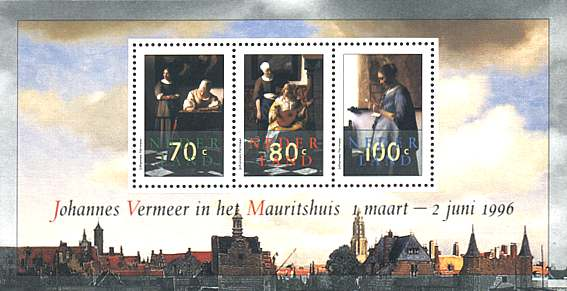
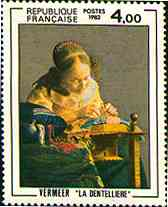
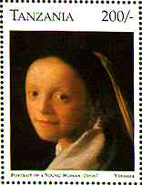
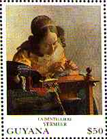
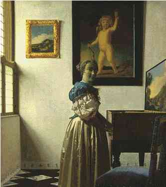
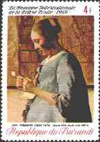
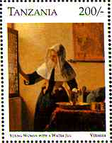
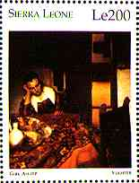
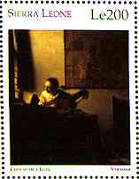
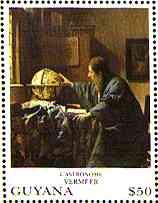

Vermeer van Delft
← Recently Modernized Pages · Art Gallery · Home
Vermeer, Jan (1632-1675), Dutch painter, who excelled in portraying comfortable interior scenes that are composed with mathematical clarity and suffused with cool, silvery light.

Vermeer, also called Jan van der Meer van Delft, was born in Delft and baptized on October 31, 1632. After serving a 6-year apprenticeship, part of it probably under the Dutch painter Carel Fabritius, he was admitted in 1653 to the guild of St Luke of Delft as a master painter. An important member of the guild, he served four terms on its board of governors and been well appears to have known to his contemporaries. He made a modest living as an art dealer rather than as a painter.
|
 |
 |
 |
|
| The Lacemaker | The Guitar Player | Young Woman | The Lacemaker |
Only 35 of Vermeer's canvases have survived, and none appear to have been sold. Their small number is the result of Vermeer's deliberate, methodical work habits, his comparatively short life, and the disappearance of many of his paintings during the period of obscurity following his death in Delft on December 15, 1675.
 A Young Woman Standing at a Virginal |

 |
With a few exceptions, including some landscapes, street scenes, and portraits, Vermeer's output consisted of sunlit domestic interiors in which one or two figures are shown reading, writing, playing musical instruments, or engaged in a domestic task. These objectively observed, precisely executed genre paintings of Dutch life in the 17th century are characterized by a geometrical sense of order. He was a master of composition and in the representation of space.
|
 |
 |
 |
 |
| Woman with a Jug | Girl Asleep | Lady with a Lute | Astronomer |
Forgotten after his death and not rediscovered until the late 19th century, his reputation steadily increased thereafter. He is today considered one of the greatest Dutch painters. Source: Microsoft Encarta 96. Vermeer is one of my preferred artists.
Fakes of his work were made for a time and were sold to highest Nazi officials during World War II.
Link: Vermeer and da Vinci
Background: Painter in his workroom, Museum of Fine Arts, Vienna, Austria